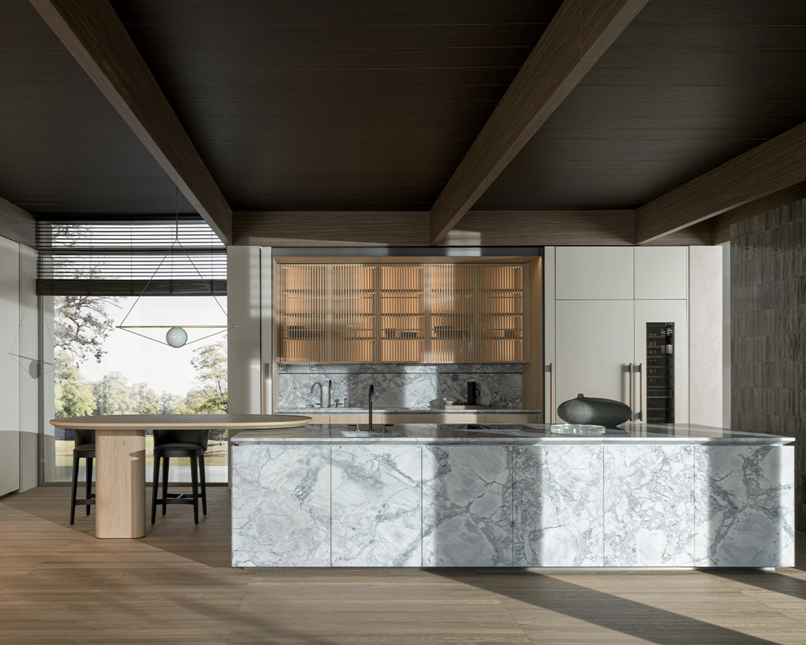
Intersection
Кухня Vincent Van Duysen для Molteni&C.
Intersection
Кухня Vincent Van Duysen для Molteni&C.
Дизайн: Vincent Van Duysen
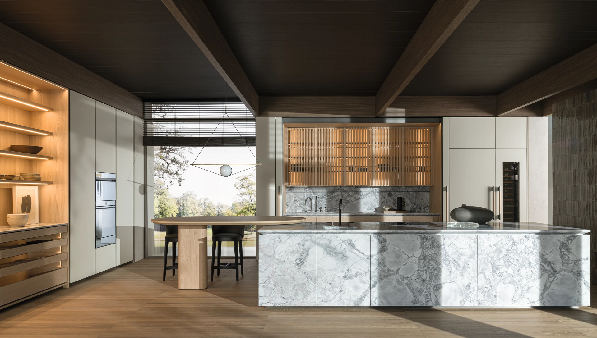
Intersection выпускается в широком выборе материалов и отделок, а также в моно-материальной версии, где притягательность монолитных объектов из одного материала вдохновила Vincent Van Duysen создать уникальный, скульптурный и архитектурный объект — результат тщательных технических исследований инженерного департамента Molteni&C Dada Engineering.
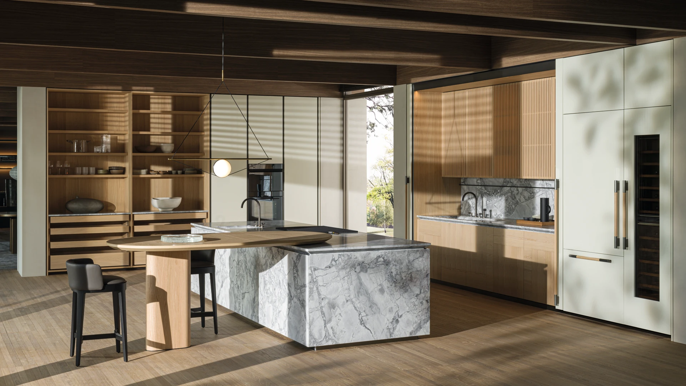
Инкрустация на фасадах подчёркивает материальность используемых пород. Барная стойка представляет пересекающиеся текстурные поверхности, образующие лаконичный и рациональный профиль. Сама столешница становится центром композиции: скульптурная деталь включает канал под кромкой, позволяющий дверцам и ящикам открываться без ручек.
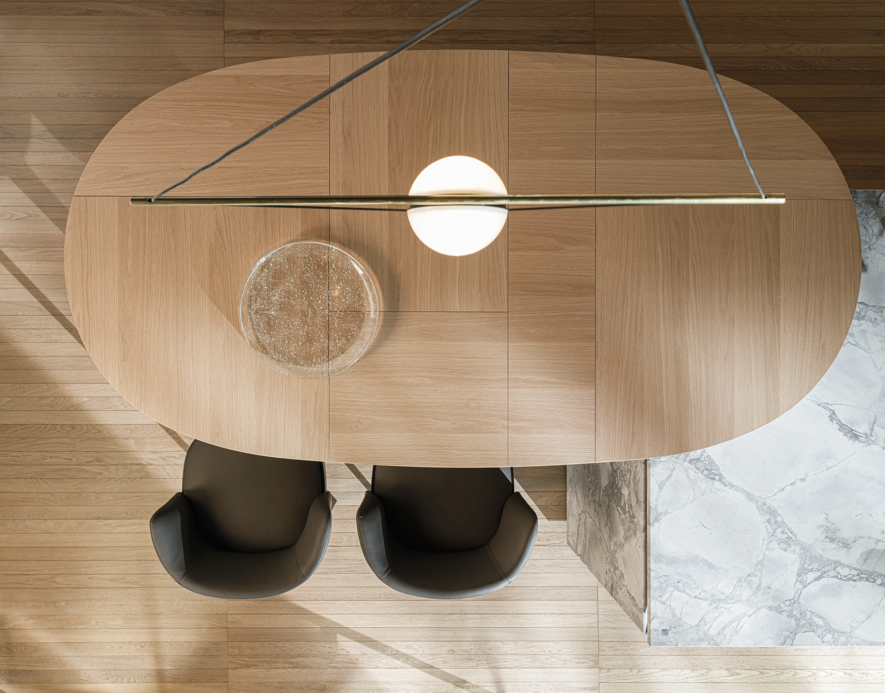
Intersection — кухня с выразительным характером, демонстрирующая мастерство бренда в обработке материалов. Van Duysen вдохновлялся великими модернистами в использовании геометрических композиций и благородных материалов. Intersection предлагает универсальную систему для линейных, угловых или островных композиций, где игра поверхностей и столешниц создаёт переливы света и тени (источник: molteni.it).
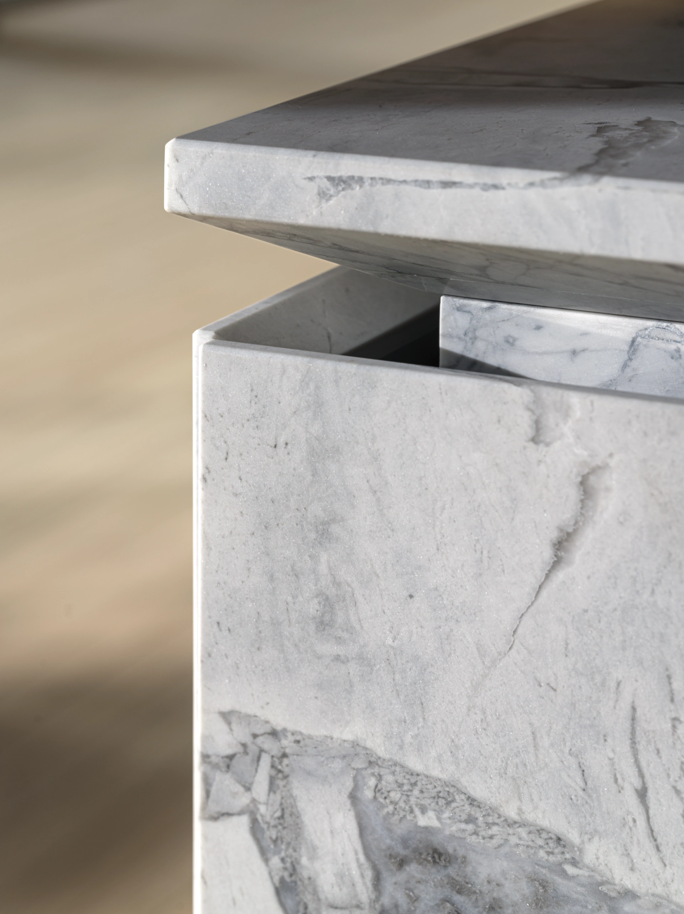
- Моно-материальная версия — монолитный объект без комбинации отделок
- Двери и ящики без ручек — скрытый канал под кромкой столешницы
- Конфигурации: линейная, угловая, островная
- Разработана инженерным департаментом Molteni&C Dada Engineering
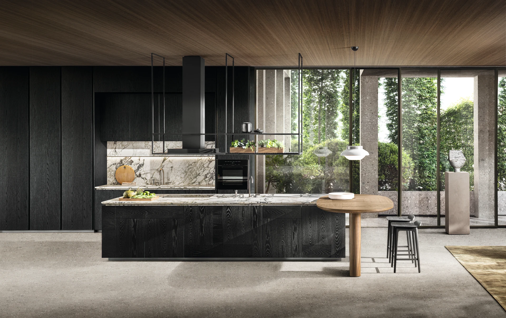
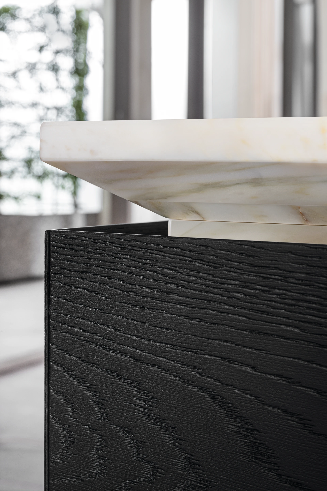
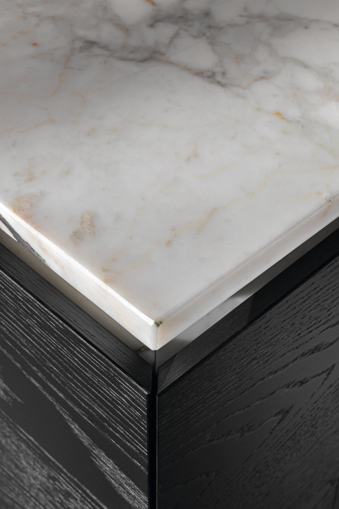
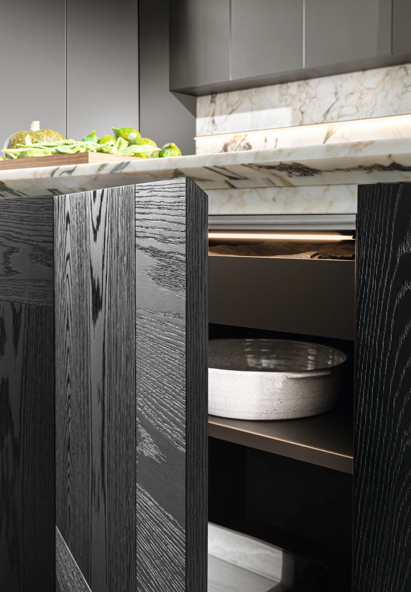
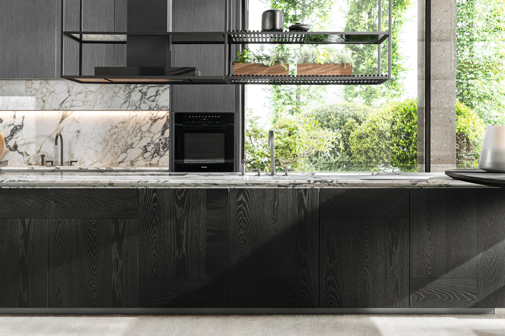
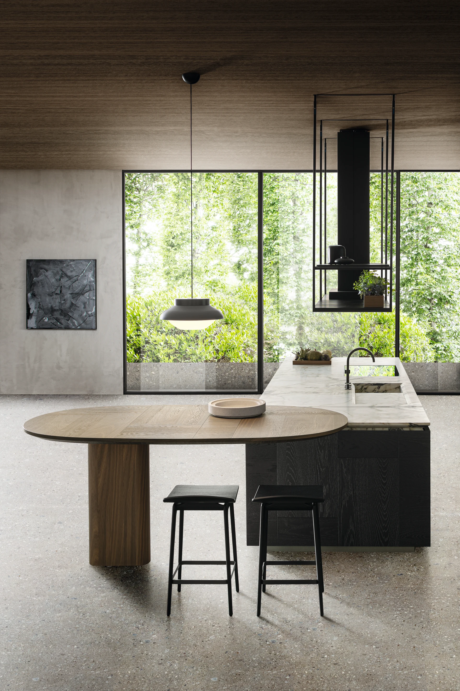
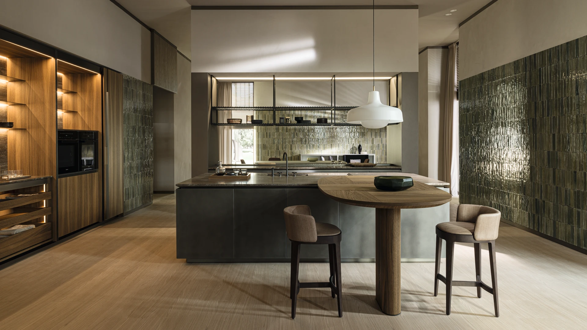
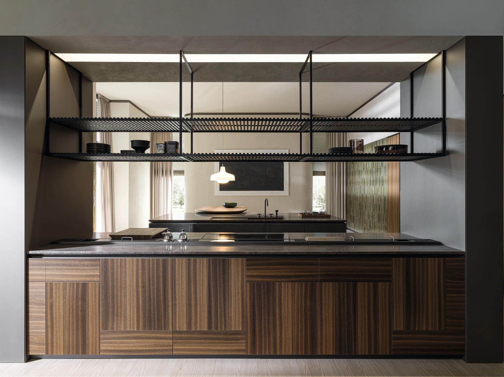
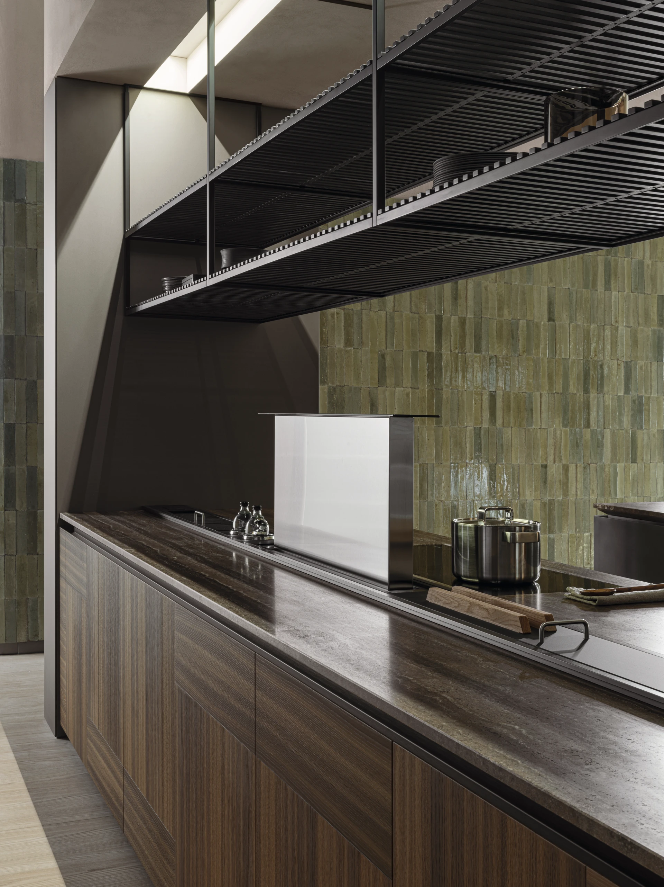
Vincent Van Duysen
Бельгийский архитектор, креативный директор Molteni&C с 2016 года. Известен строгим, почти монашеским минимализмом и вниманием к материалам в их естественном, необработанном выражении.
Обсудить проект
из коллекции Intersection
Персональная консультация по конфигурации и материалам.